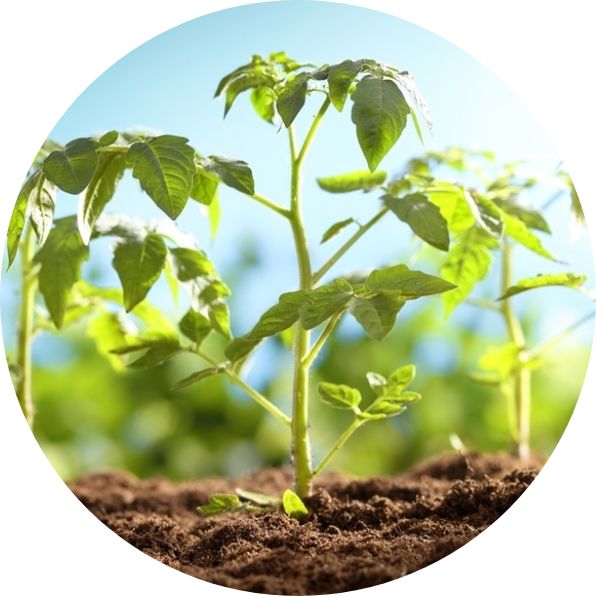
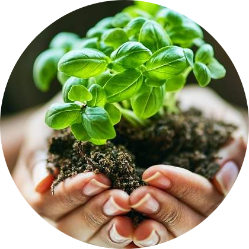

Las plantas, un desarrollo de vida

Desde tiempos remotos hasta la actualidad la humanidad ha dependido de las plantas.

De ellas se obtienen productos para satisfacer necesidades de alimento, vivienda, energía, salud, vestido y estética.
El interés por las plantas ha permitido observar mejor sus características y hacer un mayor uso de ellas.